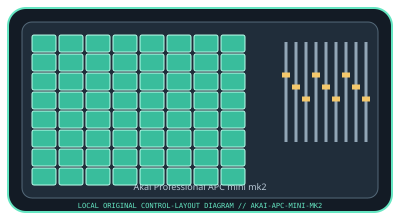

[ SPECIALIZED INPUT CONTROLLERS // IDENTIFIED COMPONENT ]
Akai Professional APC mini mk2
Compact Ableton-oriented clip and mixer controller with an RGB pad matrix and nine faders.

MODEL IDENTIFICATION: APC mini mk2. Confirm the full label, revision, region, included accessories, and software generation against the physical unit before use.
Model specifications
| Catalog leaf | Specialized input controllers |
|---|---|
| Exact model / identifier | APC mini mk2 (Akai model identifier: APCMINI2) |
| Control inputs / sensors | 64 RGB clip-launch pads in an 8 × 8 matrix; eight channel faders, one master fader, and dedicated track/scene, stop, and navigation buttons. Pads are switches with velocity-sensitive performance behavior where supported by the selected mode. |
| Connection / protocol | USB Type-B connection and USB bus power; class-compliant USB MIDI/control surface, with no audio interface. Control-surface behavior depends on the installed host integration. |
| Driver, software, and host compatibility | Designed for Ableton Live and supplied with Ableton Live Lite; Akai software registration and downloads are available through the manufacturer. MIDI messages can be mapped in compatible host software. Supported Windows/macOS versions can change with Ableton and Akai releases. |
| Setup / calibration | Install the supported Ableton Live version and its APC mini mk2 control-surface profile, connect by USB, then select the device for control input/output in Live. Verify pad grid and fader assignments in a test set; no analog calibration is required. Check firmware/software release notes before updating. |
Safety and preservation
Use a stable, dry surface and avoid liquids around the pad matrix and faders. Move faders gently without side-loading them; disconnect USB before cleaning. Keep the cable from becoming a trip or snag hazard.
Record observed condition, host OS, application/driver version, firmware, accessories, and test conditions separately from manufacturer claims.
Primary manufacturer sources
- Akai Professional APC mini mk2 product pageManufacturer specifications, control layout, and included-software information.
- Akai Professional APC mini mk2 downloadsManufacturer support portal for the APC mini mk2 user guide, software, and compatibility notices; select the exact model.
Specifications and software support can change by revision and host OS. Verify the exact unit and applicable manual before service or deployment.